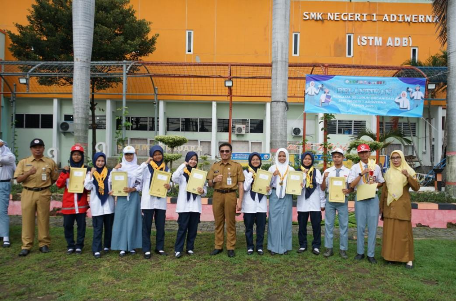

ADIWERNA — Palang Merah Remaja (PMR) Wira SMKN 1 Adiwerna sukses mengukir prestasi gemilang dengan memboyong total sembilan penghargaan bergengsi dalam berbagai ajang kompetisi tingkat Kabupaten Tegal sepanjang tahun 2024. Rentetan kemenangan ini menegaskan posisi SMKN 1 Adiwerna sebagai salah satu pilar kekuatan dalam pembinaan kepalangmerahan di wilayah Kabupaten Tegal.
Prestasi luar biasa ini diraih melalui dua ajang besar, yakni Latihan Gabungan (Latgab) PMR Wira serta Jumpa Bakti Gembira (Jumbara) PMR Tingkat Kabupaten Tegal. Pada ajang Latihan Gabungan dan Uji Kecakapan, PMR Wira SMKN 1 Adiwerna berhasil menyapu bersih tiga gelar Juara 1 sekaligus, yang meliputi:
- Juara 1 Lomba Cerdas Cermat (LCC) PMR Wira
- Juara 1 Lomba Poster SMKN 1 Adiwerna
- Juara 1 Lomba Video Terbaik Uji Kecakapan PMR Wira
Dominasi Tak Terbendung di Ajang Jumbara Sekabupaten
Keperkasaan PMR Wira SMKN 1 Adiwerna semakin teruji saat diterjunkan dalam momentum Jumbara PMR Tingkat Kabupaten Tegal. Bersaing ketat dengan puluhan sekolah lainnya, mental juara dan kesiapan fisik para kontingen terbukti berada di level tertinggi. Enam trofi tambahan berhasil dibawa pulang dari berbagai sektor penugasan:
- Juara 1 Remaja Sehat Peduli Sesama (RSPS)
- Juara 2 Aksi Cepat Tepat (ACT)
- Juara 2 Pertolongan Pertama (PP)
- Juara 2 Bidang Kepemimpinan
- Juara 2 Bidang Kesehatan Remaja
- Juara 2 Media Komunikasi, Informasi, dan Edukasi (KIE)
- Juara 3 Kegiatan Anjangsana

Dokumentasi bersama kontingen PMR Wira SMKN 1 Adiwerna saat memamerkan piala kemenangan atas pencapaian luar biasa sepanjang tahun 2024.
Buah dari Kerja Keras dan Kedisiplinan
Keberhasilan masif yang diraih secara beruntun ini tentu tidak terwujud secara instan. Pencapaian ini merupakan buah manis dari disiplin tinggi, manajemen waktu yang ketat, serta latihan rutin yang intensif selama berbulan-bulan di bawah bimbingan komprehensif para pembina PMR SMKN 1 Adiwerna.
Kompetisi skala kabupaten ini menjadi pembuktian nyata bahwa anggota PMR SMKN 1 Adiwerna tidak hanya matang dalam aspek teori, tetapi juga sangat responsif, taktis, dan cakap ketika harus mempraktikkan keterampilan lapangan, kerja sama tim, serta pengambilan keputusan di bawah tekanan.
Dengan berakhirnya kalender kompetisi tahun 2024 lewat torehan tinta emas ini, PMR Wira SMKN 1 Adiwerna diharapkan tidak cepat berpuas diri. Prestasi ini diharapkan mampu menjadi pemantik semangat bagi seluruh anggota untuk terus mempertahankan tradisi juara, sekaligus menjadi inspirasi nyata bagi seluruh civitas akademika SMKN 1 Adiwerna untuk terus berkarya, mengabdi pada kemanusiaan, dan mengharumkan nama sekolah di kancah yang lebih luas.